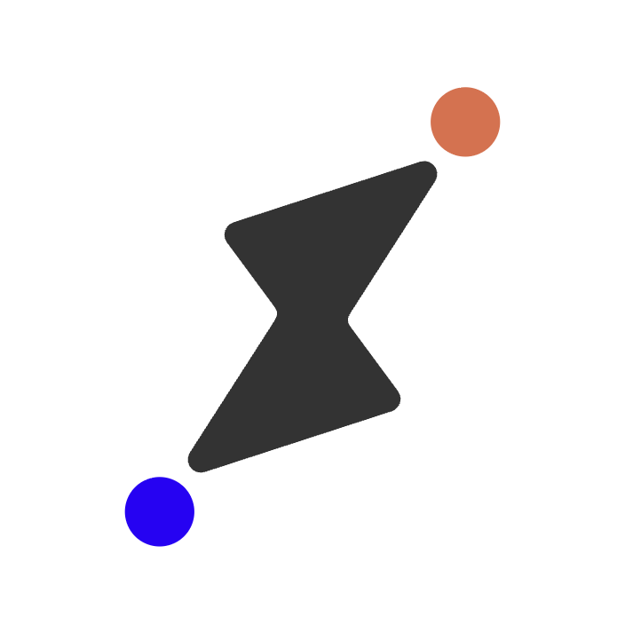

One orchestrator.
A whole team.
Hermes plans and verifies. Your terminals build — Claude Code by default, plus Kimi, Grok, Codex, or anything you already signed into. Multi-worker teams, save & reload, rename, colors, per-worker perms. Model, resume, and context stay yours.
A team is one Hermes plus the workers you pick.
New pair → Team stacks Claude, Grok, Kimi (or anything you sign into) under a single hub.
Save the lineup, reopen it later with Show Teams, and route work with
pong-delegate --worker w2.
Each pane can have its own name, colors, and perms.
Get the app
Download is free. If it helps, leave a tip — same download either way. Stripe checkout, then GitHub release.
Share a fraction of the savings you’ll make! Gotta feed those kiddos too lol
Tips optional. Checkout asks for first name + email. On Stripe you can raise or lower the amount (min $1).
Follow on X
After paying, Stripe sends you to the release page for the zip.
Or skip the tip and download free above.
How it works
- Install Hermes Pong on your Mac (unzip → Applications → open).
- New pair — Claude, Other Model, or Team (stack workers under one Hermes). Or Link terminals you already have open.
- Name & color panes, set Perms per worker, then Save Team so Show Teams can open / duplicate / delete later.
- Hermes hands tasks into the live worker window. A local verdict ledger records accepts & rejects — nothing leaves your Mac.
What’s in v1.3
Multi-worker teams and control-panel polish, shipped.
pong-delegate.py --worker w2 fans work to a specific worker. Verdict loop always on.
Not locked to one model
Sign in wherever you already work. Pong pairs windows, not vendors. Claude Code is the default worker; Kimi, Grok, Codex, DeepSeek, OpenRouter-backed CLIs, or a custom command share the same bridge — alone or as a multi-worker team under one Hermes.
You own logins and sessions. Pong never stores model API keys.
Open source on GitHub. Browse the code, file issues, or star the repo if the bridge helps.
Requirements
macOS · Terminal.app · Hermes · worker CLIs (Claude Code default) · tmux
Signed & notarized — unzip, drag to Applications, double-click to open.